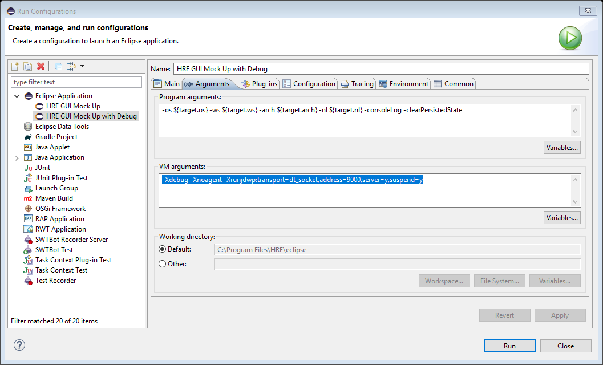
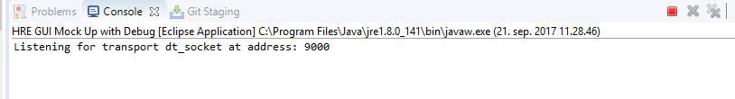
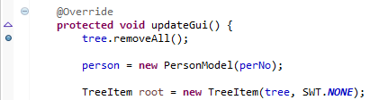
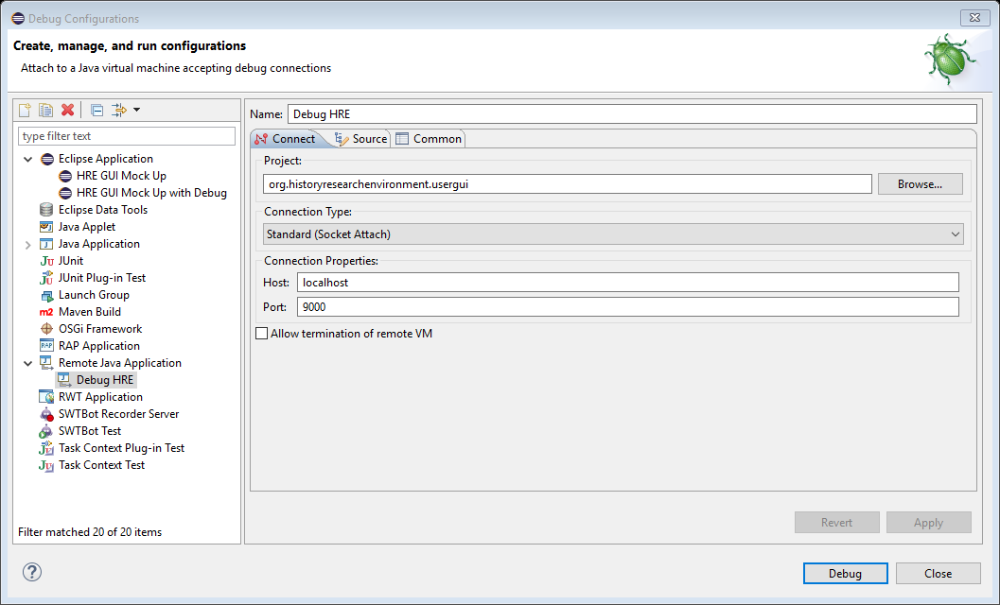
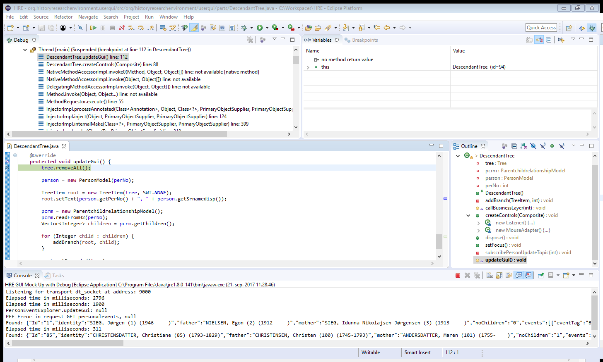

How to debug an Eclipse RCP application
Use these VM arguments in the Arguments tab:
-Xdebug -Xnoagent -Xrunjdwp:transport=dt_socket,address=9000,server=y,suspend=y
|
Run Configurations |
And click run.
It suspends until we start the debugger, because we specified “suspend=y”:
|
Screen Clipping |
Double click in the margin or right click to set a break point.
|
Screen Clipping |
Use the same port as above (in this case 9000):
|
Debug Configurations |
And click debug.
After a cup of coffee or two, you will get a debug session running.
It might not be activated until you reach a breakpoint:
|
HRE - org.historyresearchenvironment.usergui/src/org/historyresearchenvironment/usergui/parts/DescendantTree.java - C:\Workspaces\HRE - Eclipse Platform |
From here you can single-step, watch or change variables, etc.